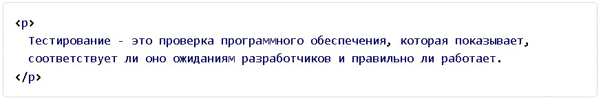
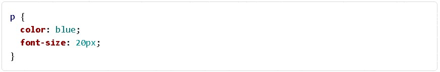

Многие из элементов HTML уже имеют какое-то свое визуальное оформление: у параграфов есть отступы, ссылки в тексте выделяются, как правило, синим цветом и подчеркиваются, заголовкам устанавливаются другие значения размера шрифта. Но для создания красивых современных сайтов этого недостаточно. Какие-то стили нам просто не подходят, а какие-то элементы мы хотим стилизовать отдельно.
В этом помогает язык таблиц стилей CSS (Cascading Style Sheets — «каскадные таблицы стилей»). Благодаря CSS фронтенд-разработчик задает внешний вид элементов. Он выбирает нужные цвета, шрифты, размеры и создает стиль, чтобы интерфейс выглядел привлекательно и согласованно.
Как это происходит: сначала разработчик указывает, какие элементы на странице он хочет стилизовать. Возьмем, к примеру, стилизацию того же абзаца.
Далее фронтендер создает правила стилей. Это как инструкции, которые говорят браузеру, как выглядеть каждому выбранному элементу. Разработчик устанавливает цвет текста, размер шрифта, отступы и многое другое. В нашем случае пусть цвет абзаца будет синим.
После этого, когда браузер загружает страницу, он читает CSS-код и применяет стили к соответствующим элементам. Так как мы указали, что весь абзац должен быть написан синим цветом, браузер окрасит его в синий. Если разработчик захочет изменить внешний вид страницы, он просто изменит CSS-код. Так можно легко вносить изменения без необходимости менять саму HTML-структуру страницы.